Site Report
Reflective Discussion on experience with the Web Development module
As this was my second time learning HTML and CSS, I had previously attempted to learn online but was unsuccessful. However, this module has taught me how to create forms and layouts more efficiently and with fewer difficulties. I now feel more confident structuring web pages and implementing design elements effectively.
Design Decisions
When I designed my website, my goal was to create something clean to see and a user-friendly layout by ensuring the text was clear and that navigation was straightforward. One of my key decisions was implementing a responsive design to ensure the website functions well on different screen sizes. Additionally, I opted for a minimalistic design to enhance user experience by reducing clutter and improving content visibility. For example, West Northampton Council:
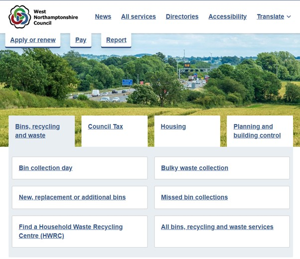Font and Colour Choices
My decision to select fonts and colours for my website was based on my style, minimalist and straightforward. I chose a design that is clear, easy to read, and effective in transmitting my message. My goal was to showcase my work, not just as another university assessment but as a portfolio that could support me in reaching my first job in the field. For example, of Jack Parsons, in GitHub.
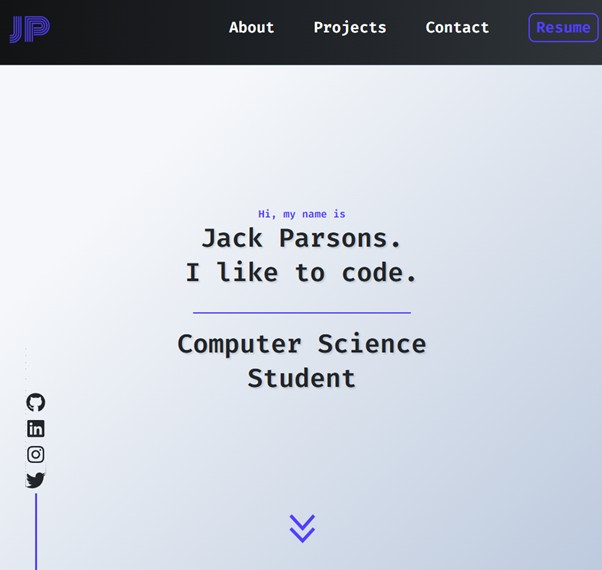Sources of Inspiration
I search various sources, including online tutorials, design blogs, and existing websites, including the University of Northampton. Feedback from potential users in the future, for example, friends and coworkers who did not know how to create a website but use it in day-to-day life, also influenced my design choices, allowing me to refine elements for better usability. Overall, this module has been an enriching experience, equipping me with essential web development skills.
Validation Screenshots
Index HTML
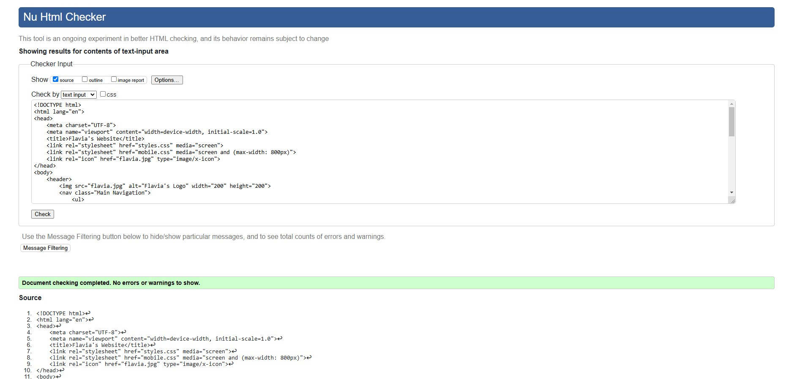Project HTML
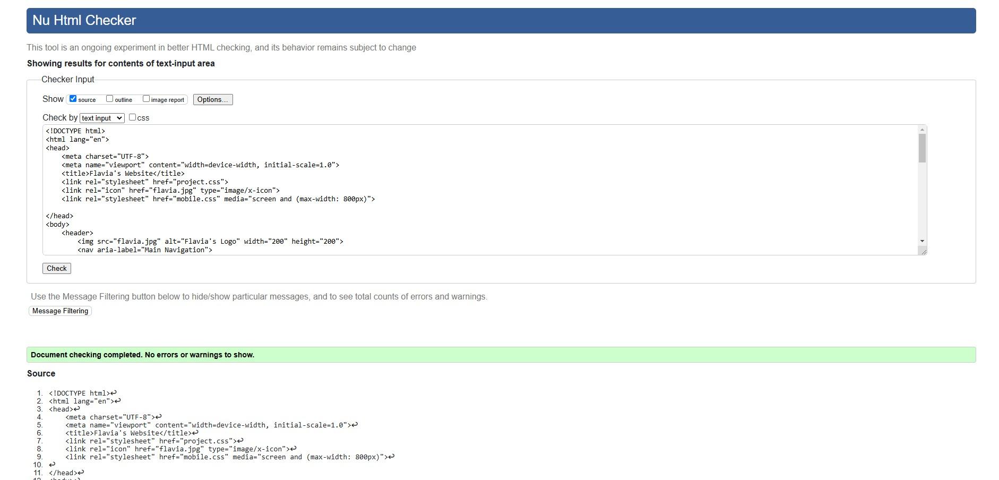Contact HTML
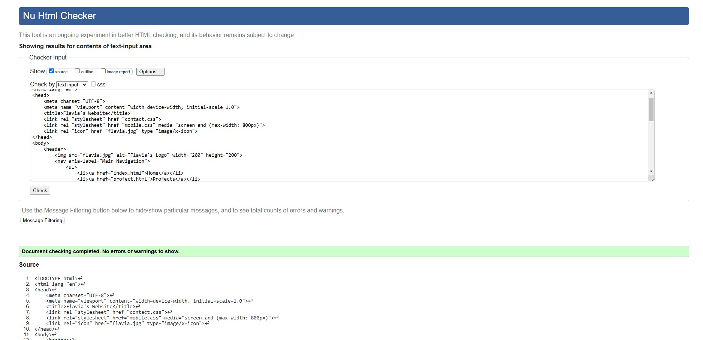Video Demo HTML
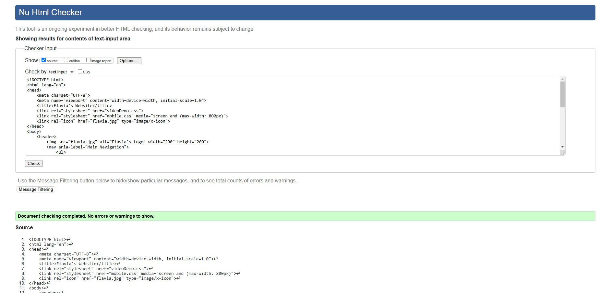Site Report HTML
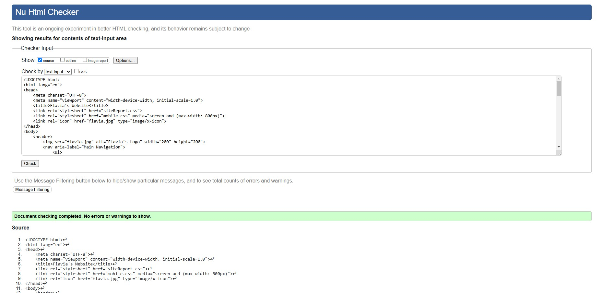Styles CSS
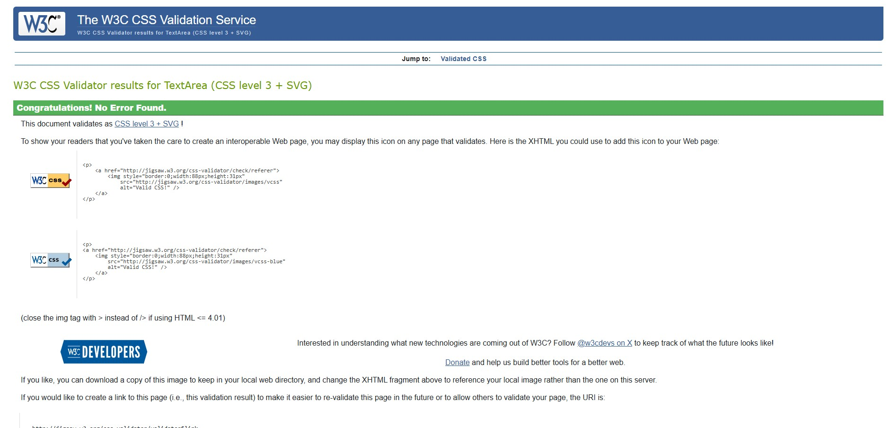Project CSS
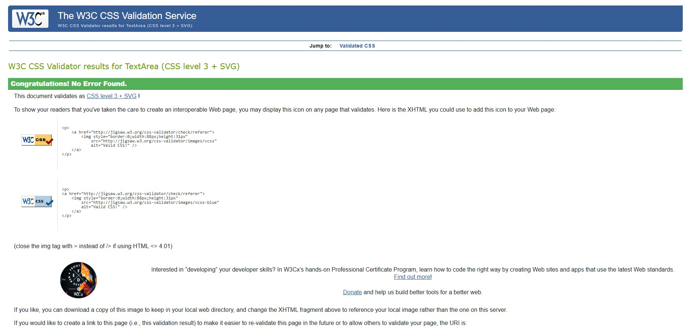Contact CSS
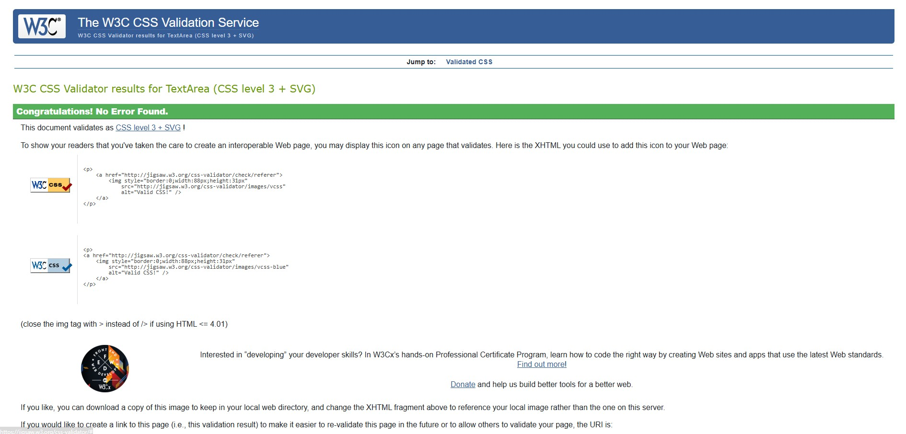Video Demo CSS
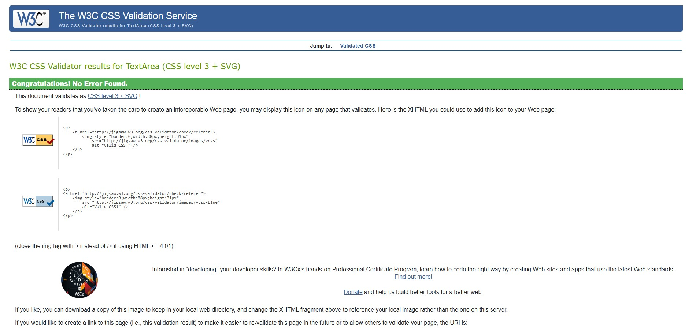Mobile CSS
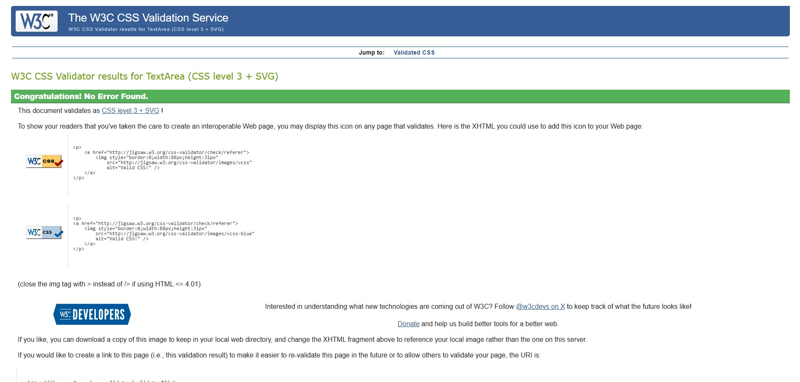Site Report CSS
Video Demo
Below is the URL to the video demonstration of this assessment.
Video Demo